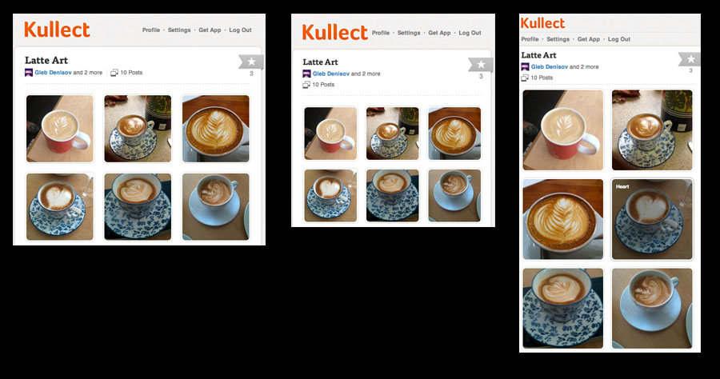

Objects, Functions and Inheritance...
What am I up to?
- Electronic Textbooks
- Device Independent Document Layout
The web is a great target platform
- Same environment runs everywhere
- Days of standard issues are long gone
- Get around idiotic restrictions of most iShittyDevices
- Great designers are working in this area already
They understand layout (mostly)

- "JavaScript is an amalgam of good parts and bad parts. Its best parts came from Self (prototypes) and Scheme (lexically scoped nested functions). But the interaction of those two very good parts produced some very bad parts."
-Douglas Crockford
This talk
- I fight with JavaScript on a daily basis,
so I wrote a rant, so I'm giving a talk

Who's responsible
- Brendan Eich, for Netscape 2, created it "within 10 days"
- "Else something worse than JS would have happened"
- The big idea: Validate forms on the client.
- Today: The most widely used language in the world*
* Totally unsubstantiated claim.
Let's play
Objects, Functions, Inheritance
Object Creation
- Classes have two purposes: make things easy for compiler writers and keep poor programmers busy.*
* I am going to retract this statement in about 10 slides...
Objects are Dictionaries
- Notice, identifies can be strings, or symbols. Bad?
Functions
- First Class, Lexically Scoped, Nested Functions.
Every language should have this
Functions and Objects
- Objects are dictionaries, functions are first class...
Objects make great modules!
Implement Mixins
- Very cool, because we get to invent our own language features
Some language features are better than others.
OK OK but let's use them as objects already
Hint: It's gonna get rough
Function invocation and the magic "this" pointer
-
-
<ident>() lookup is scope chain, create new scope, execute code in it.
-
<obj>.<ident>() - lookup <obj> in scope chain, lookup <ident> in object dict
BTW, there are two more that we will get to... (it's gonna get real ugly real soon...)
- 1] binds
this to the global object
- 2] binds
this to the <obj>
- This is a real tension here. Given the set of design decisions we made, we can't avoid deciding what to bind
this to.
* Totally unsubstantiated claim.
Mistake: "this" to global
-
<ident>() binding this BREAKS NESTED FUNCTIONS!
Fix it with a feature
-
-
<ident>() - this is global
-
<obj>.<ident>() - this is <obj>
-
<obj>.<ident>.apply(this, args) - specify this binding:
Inheritance
Oh boy, oh boy, oh boy!
An issue from before:
- Code duplication:
Because we don't have classes, functions just live on the object itself
"Fake" private variables!
=== OK, but what about inheritance...
Since JavaScript is a Duck Typing language
we don't have to care about type relationships, but we still care about:
- Shared functionality (efficiency on the programmer's side)
- Code reuse (efficiency on the compiler's side)
- Efficient Identification (think of the Visitor Pattern... DOM Traversal)
The idea is: Specialized objects derived from General objects, you only specify
=== Prototypal inheritance:
Let's see what are Objects and Functions comprised of:
var obj = {}
log(obj);
log(obj.__proto__);
log("-");
var func = function() {};
log(func);
log(func.__proto__);
So, as we expect, there is a pointer, __proto__, that points to the parent object.
So, let's try it:
var animal = {
makeNoise: function() {
return this.noise;
}
}
var duck = { noise: "quack" }
var dog = { noise: "woof" }
duck.__proto__ = animal;
dog.__proto__ = animal;
log(duck.makeNoise());
log(dog.makeNoise());
IT WORKS!!!!
Now try:
var animal = {
makeNoise: function() {
return this.noise;
}
}
var duck = { noise: "quack" }
var dog = { noise: "woof" }
duck.__proto__ = animal;
dog.__proto__ = animal;
log(duck instanceof animal);
log(dog instanceof animal);
YAY EVERYTHING BRREAKS! That's right... instanceof does not follow the prototype inheritance hierarchy... WTF?
Let's check check the docs:
WTF? OK, so we can't even use this, (and in fact it doesn't work in IE or Opera)
It's some internal interpreter thing...
We look further:
DANGER AHEAD, here's the 4th function invocation I warned you guys about earlier!
=== Constructor Functions
This is, by far, BY FAR, the biggest mistake in Javascript.
This is a MAJOR MAJOR FUCKUP.
In fact, rumor has it, that this was not in the original internal javascript version,
but was later added to simulate Java constructors.
The intent is not bad:
function Duck() {
this.makeNoise = function() { return this.noise; }
this.noise = "quack"
}
log(Duck.prototype);
var duck1 = new Duck();
log(duck1.noise);
log(duck1.makeNoise());
log("-");
log("The constructor of duck1 is Duck(): " duck1.constructor === Duck);
Function invocation:
4) new ():
1) creates a new object (just a plain old object)
2) sets this object's __proto__ to 's .prototype
3) calls with `this` bound to the just-created object
4) return this new object.
OK, what the.....
=== Let me reveal how it looks:
Each object has:
__proto__: this is used for identifier lookup in .
.constructor: a pointer to the function that created this object using the `new` keyword
Each function, since we don't know whether it is a function or called with `new`, has:
[[Scope]] which points to the execution context
[[Code]] which points to a string representation of the function's code
.prototype which points to a (settable, but initially empty) object
Each function carries a prototype object with it, and when new() gets called, the created object's __proto__ points to this. Thus...
=== Constructor functions can set an object's __proto__
So, this seems like a, uh, kinda a good intent. Imagine the compiler write:
right now it looks like the __proto__ can only be set by the constructor
during object creation
function Animal() {}
log(JSON.stringify(Animal.prototype));
Animal.prototype.makeNoise = function() { return this.noise; }
dog = new Animal();
duck = new Animal();
dog.noise = "woof";
duck.noise = "quack";
log(dog.makeNoise());
log(duck.makeNoise());
=== So, let's look at the original inheritance example:
function Duck() { this.noise = "quack"; }
Duck.prototype = new Animal();
function Dog() { this.noise = "woof"; }
Dog.prototype = new Animal();
var duck = new Duck();
var dog = new Dog();
log(duck.noise);
log(dog.noise);
log(duck.makeNoise());
log(dog.makeNoise());
BTW, notice how much this sucks:
- we have constructor functions, but you only run them ONCE when you define the class!
Thus you end up with idiotic duplicated code like this:
function Animal(name) {
this.name = name;
}
function Dog(name, age) {
this.name = name;
this.age = age;
}
Dog.prototype = new Animal("bogus name");
WHAT THE FUCK? SO WHY DO WE EVEN HAVE CONSTRUCTOR FUNCTIONS?!
you guys REALLY SHOT YOURSELF IN THE FOOT WITH THIS ONE!
=== OK, so let's get into this a little bit:
This is Classical Inheritance: Show skyscraper with blueprints
This is Prototypal Inheritance: Show hacker copying
This is Pseudoclassical: Show fat hacker kid
This is what they call "pseudoclassical" inheritance. The muddled-up bastard offspring that JavaScript came up with:
- when we want to create inheritance hierarchies in JavaScript:
- we create a constructor function for each "Class".
- we use the prototype object to store "class-wide" things
- if we want to create an inheritance hierarchy, we use the prototype to point to a new object of the parent type. this object will, again, have a prototype object with the parent's class-wide functions on it.
=== Aside: what if you call a constructor function without using new?
BAD PART, AGAIN!
function Animal(name) {
this.name = name;
}
var dog = Animal("Einstein");
log(dog.name);
//log(name);
//log(window.name);
=== What could they have done?
1) Have a separate Constructor, different from a normal function?
2) Stick with "self"-style and just have an object's parent pointer exposed and settable
3)
= Clearly this needs to be tamed.
= Crockford: Hey, let's introduce a NEW way to generate Objects!
OK, if we love self (and we do!) and we just want purely prototypal inheritance:
function object(o) {
function F() {}
F.prototype = o;
return new F();
}
var animal = object({});
animal.makeNoise = function() { return this.noise; };
var dog = object(animal);
dog.noise = "woof";
log(dog.makeNoise());
Downsides:
1) Instanceof still doesn't work:
log(dog instanceof animal) //still fails
log(animal.isPrototypeOf(dog)) //they added a feature to make this work... messy
Now, this is really messy to me. Two different ways to work with inheritance, yeack!
and isPrototypeOf() is pretty new - not supported everywhere yet.
2) We lost the ability to have constructors
3) No differentiation between 'class' and 'object' (but that might be okay).
And this is a bit weird to most programmers, though:
function object(o) {
function F() {}
F.prototype = o;
return new F();
}
var animal = object({});
animal.makeNoise = function() { return this.noise; };
var dog = object(animal);
dog.noise = "woof";
var dog1 = object(dog);
var dog2 = object(dog);
log(dog.makeNoise());
= Then there are a TON of different ways you get to "fake" classical inheritance
They all have tradeoffs between speed, memory, visibility and ugliness.
I have 5 different ways documented as part of the rant that inspired this talk:
https://github.com/njoubert/inheritance.js
= My way:
- Differentiate between Classes and Objects: makes it easy to decide where code should live (Classes, not duplicated)
- I want a "constructor"
- I want "constructors" to be able to call parent constructors, else it's pointless to have them
- I want instanceof to work so that I can use the visitor pattern effectively.
- I want to minimize code duplication (aka lightweight objects): no storing of functions on all the objects
- Use the fast path for "new", to create lightweight objects
Here is an example of using my library:
var Animal = Class.extend({
makeNoise: function() { return this.noise; }
});
var Dog = Animal.extend({
noise: "woof"
});
var Duck = Animal.extend({
noise: "duck"
});
var dog = new Dog();
var duck = new Duck();
log(dog.makeNoise());
log(duck.makeNoise());
log("duck instanceof Duck: " + (duck instanceof Duck));
log("duck instanceof Animal: " + (duck instanceof Animal));
=== OK, I'm going to admit... still one ugly part left:
Dog and Duck both have the same __proto__, which is Animal's prototype.
Since "this" is bound to the right-most object, we still have to use the funky "call"/"apply" semantics:
var Animal = Class.extend({
init: function (name) { this.name = name},
makeNoise: function() { return this.noise; }
});
var Dog = Animal.extend({
init: function(name) { this.parent.init.call(this,name); },
noise: "woof"
});
var Duck = Animal.extend({
init: function(name) { this.parent.init.call(this,name); },
noise: "duck"
});
var dog = new Dog("Einstein");
var duck = new Duck("Newton");
log(dog.makeNoise());
log(duck.makeNoise());
log(dog.name);
log(duck.name);
= How does this work?
var Class = function(){};
Class.extend = function(prop) {
initializing = true;
//first we create a new empty object of the current type
var prototype = new this();
initializing = false;
for (var name in prop) {
if (prop.hasOwnProperty(name)) {
prototype[name] = prop[name];
}
}
//Now we set up our Constructor function which will create objects:
function SubClass() {
if (!initializing && prototype.init) {
prototype.init.apply(this,arguments)
}
}
//Associate the prototype and constructor with this Constructor
SubClass.prototype = prototype;
SubClass.prototype.constructor = SubClass;
//Grab the parent pointer so we can call up the inheritance hierarchy:
SubClass.prototype.parent = this.prototype;
//Finally, save the "extend" method on the newly created Constructor function:
SubClass.extend = arguments.callee
return SubClass;
}
= Cool huh? Well, one last issue
Debuggers identify objects by the name of their constructor function: In this case, everything is called "SubClass"
So we can improve on this by using one of the bad parts to our advantage: eval():
Now we build a constructor function of the correct name.
var Class = function(){};
Class.extend = function(prop, className) {
initializing = true;
//first we create a new empty object of the current type
var prototype = new this();
initializing = false;
for (var name in prop) {
if (prop.hasOwnProperty(name)) {
prototype[name] = prop[name];
}
}
eval("function " + className + "() { \
if (!(this instanceof arguments.callee)) { \
throw { name: \"ClassError\", message: \"Called constructor without using 'new'.\"} \
} \
if (!initializing && prototype.init) { \
if (arguments.length !== prototype.init.length) { \
throw { name: \"ClassError\", message: \"Called constructor with incorrect number of arguments.\" } \
} \
prototype.init.apply(this,arguments); \
} \
};"
+ className + ".prototype = prototype;"
+ className + ".prototype.constructor = SubClass;"
+ className + ".prototype.parent = this.prototype;"
+ className + ".extend = arguments.callee;");
return eval(className);
}
= And we'll call it a day with that. Recap:
Great things: lexically scoped first class functions, prototypal inheritance
Weird things:
4 different invocation styles in JavaScript.
The `this` pointer is painful!
Constructor functions are a horrible design
eval() is both good and evil
Overall:
I think it's hugely cool that everyone can invent their own JS as they go along to suit their needs.
= ECMAScript 6
Proposal: New anonymous functions
(x) => x * x
Always binds "this" to enclosing scope. Even when called as method.
To have "this" receive a dynamic binding to an object:
(this, x) => this.property = x * x